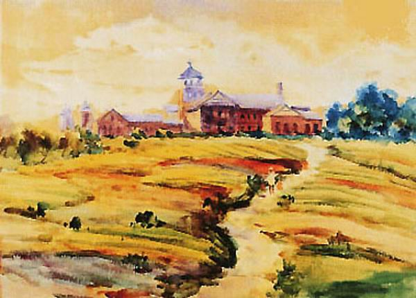
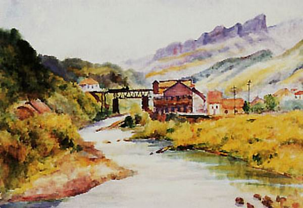
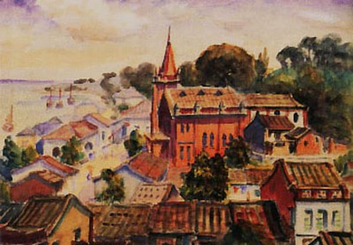

與水彩的相遇
倪蔣懷出生於台北的書香世家，以一等賞的成績於公學校畢業，進入台灣總督府國語學校，此時正是水彩畫廣受日本民眾唉好的年代，在這裡他遇見了石川老師，石川是台灣水彩畫的開山祖師，受日本自由化運動影響，鼓吹戶外寫生，倪蔣懷於是開始了他的水彩寫生歲月。

留學夢碎
原先打算赴日深造的倪蔣懷，因為子女陸續出生，無法圓夢。因與基隆礦業顏家結為連理，倪蔣懷投入實業，但卻無法忘卻水彩畫，他一生的追求。日後，倪蔣懷在工作之餘，開啟了他日記式的寫生創作，他的腳步深入台灣每個角落，雖然不是名勝風景，卻紀錄了一些純真的鄉土民情，這些給了我們機會，一睹30年代的台灣風情。

收藏與付出
雖然礦業經的辛苦，倪蔣懷在藝術活動上相當慷慨，組織畫社、彼此切磋、舉辦畫展、創立台灣美術研究所、贊助年輕藝術家，如礦工畫家洪瑞麟、積極收藏各國藝術品，如孟克，甚至向他的老師石川購買作品。他唯一沒有完成的，大概就是在台灣籌備到一半的寶峰美術館了。
遺憾
1940年，倪蔣懷被指控為台灣歸附中國而密謀結社，史稱五二七事件。為了自清，倪蔣懷將日記交給日本憲兵隊，卻只領回數本，這幾本日記，成為日後藝術史研究的珍貴資料。隔年，倪蔣懷因病赴日就醫，後因太平洋戰爭，倪蔣懷無法再度赴日，於1943年在家中病逝。他的遺言書中，將財產分給了家人、老師、學校、員工外，更指示藝術收藏為美術館用，惟許多作品已因戰爭失傳。
無論如何，倪蔣懷五十年的人生歲月，在台灣藝術這塊土地上扮演創作者與支持者的角色，不斷撒種澆灌，已經開啟了動人的花朵！